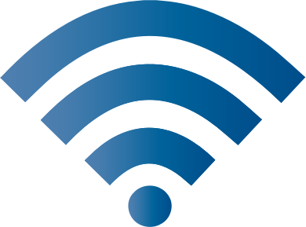
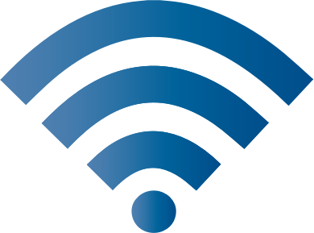
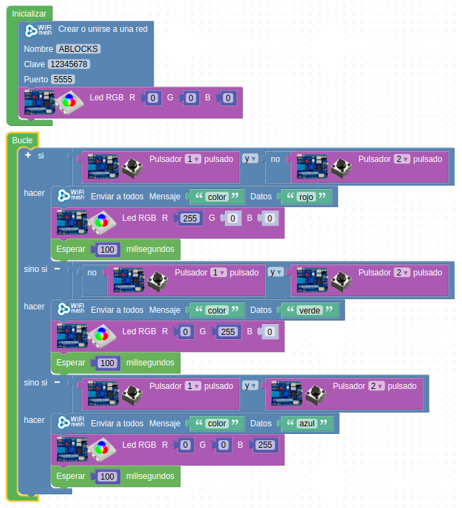
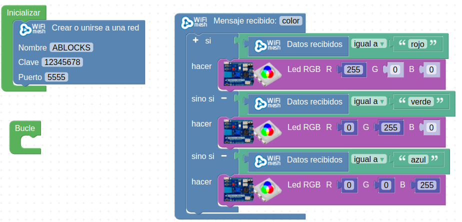

Wifi-Mesh
Wifi-Mesh es una malla de dispositivos descentralizados, conectados mediante wifi de tal manera que, todos los dispositivos pueden ser tanto emisores como receptores de mensajes.

Wifi-Mesh es una malla de dispositivos descentralizados, conectados mediante wifi de tal manera que, todos los dispositivos pueden ser tanto emisores como receptores de mensajes.

El reto consiste en que un emisor en función de las combinaciones de pulsación de los pulsadores, emite un dato diferente en un mensaje que manda al receptor.
En concreto:
En el led RGB del receptor se debe colorear con el dato de color recibido en el mensaje.
URL de proyecto público (emisor): http://www.arduinoblocks.com/web/project/942983
Código emisor:

URL de proyecto público (receptor): http://www.arduinoblocks.com/web/project/942998
Código receptor:

Obra publicada con Licencia Creative Commons Reconocimiento Compartir igual 4.0